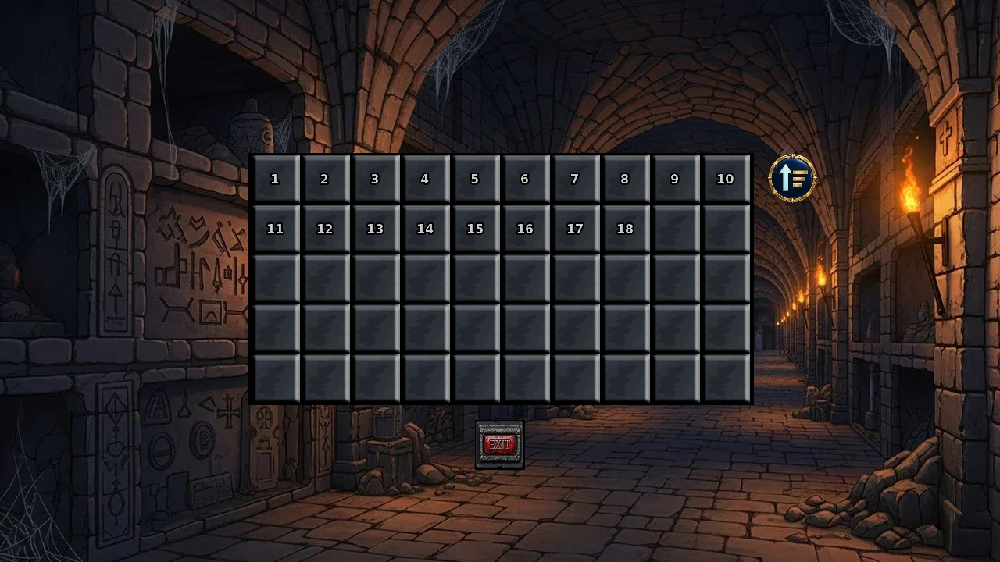
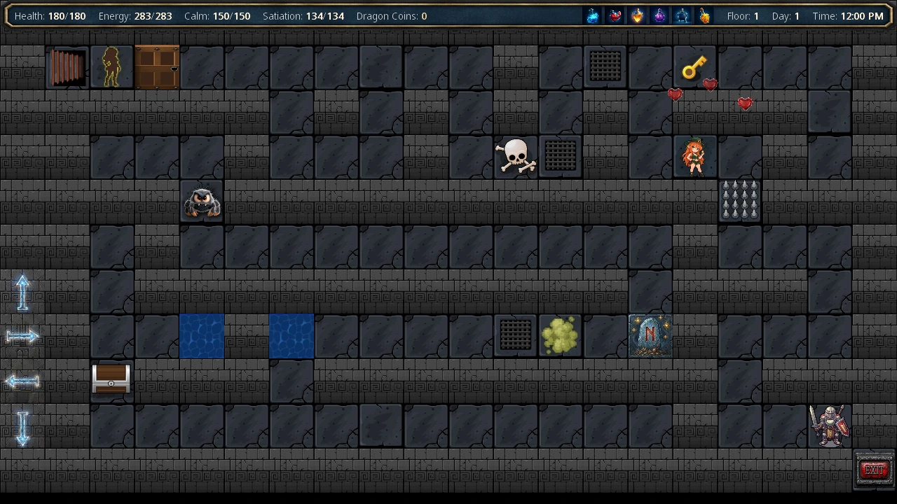
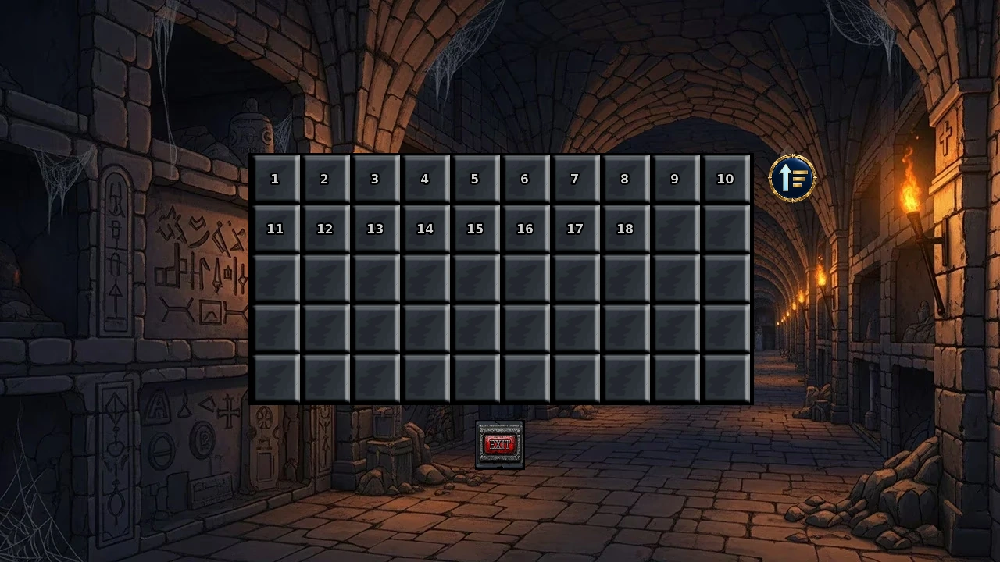
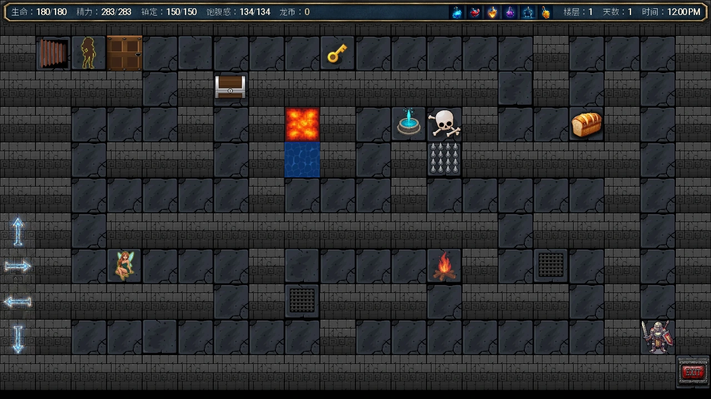

Select a screenshot to enlarge it. Screens show example inventories and progress.
Ancient Catacombs · v1.0 Beta x
For your first visit, aim to reach the next floor and leave with enough supplies to return. The ordinary dungeon combines a visible maze, floor keys, fixed guardians, random encounters, and optional routes. Its current endpoint is Floor 50; Infinity Dungeons is a separate endless mode.
Enter and choose a reached floor
Go to Medieval Era → Village Outskirts → Monastery Scriptoria, enter the monastery, and go to the Underground Catacombs. Choose Explore Ancient Catacombs, then select an available floor. Entry itself has no listed Wealth, Energy, or time charge; movement, encounters, and hazards supply the costs.
The game autosaves before entry. The picker shows reached floors within your current content access; its order button reverses the available floor list. Reaching a floor does not preserve that particular maze. You can cancel with the exit button or Esc.
Ordinary progression ends at 50. The route beyond 20 requires the appropriate full dungeon access; the descents beyond 35 and 40 also have their own supporter unlocks. Read the stair message if blocked. The Floor 45 guardian must be defeated before descending into 46. Access is separate from your character’s combat strength.

The map loop and movement controls
- You begin near the bottom right of a 20-column × 11-row floor.
- Explore for the key and the rewards you want. Keys belong to the current generated floor.
- Reach the door beside the upper-left downward stairs. Collect the key before planning to pass that progression door.
- Complete a fixed guardian when one occupies the route, then descend.
- A successful descent records the newly reached floor for later selection. Ascending also creates a fresh layout of the previous floor.
Use the on-screen directional buttons, your configured movement keys, or adjacent tile clicks. With Dungeon click-to-move enabled in Settings, clicking a reachable distant tile walks a route one step at a time. It still costs movement time and can trigger encounters. Walking stops for interactions or messages; choose the next destination after resolving them.
Click-to-move does not discover disguised secret walls or force a route through a keyless door, risky troll, robot, or force-field encounter. Approach those and use ordinary adjacent movement. You can change the destination with another click or take over with directional movement.
Coordinates and exact movement costs
Coordinates start at zero: the entrance is usually (18, 9), the stairs are near (1, 1), and the bottom border is row y = 10. A hidden route at (2, 10) is reached by moving down from (2, 9), including into a wall when its requirements are met.
| Preparation | Minutes |
|---|---|
| Neither reduction | 4 |
| Time buff or Fleet Footed | 3 |
| Both | 2 |
Poor condition can extend actual time. Dungeon hunger accumulates with movement time; Perfect Metabolism reduces its loss by 25%. Failed special obstacles and events can have additional costs.

Prepare for the route you want
| Preparation | Practical use |
|---|---|
| Health, Energy, Calm, food, and recovery supplies | Budget for walking, battles, guardian choices, and hazards. Ordinary combat recovery is explained in the Combat guide. |
| Armor | Each effective armor level removes two damage from many ordinary floor-trap hits, down to zero. Overlays and special effects can use other rules. |
| Swim | Crosses ordinary water. Floor 13 converts its corridors to water, so learn it before that visit. |
| Lockpicking | Opens chests without their Strength/Ability requirement. For the reliable progression route, still collect the floor key. |
| Fleet Footed / Time | Reduce base movement time and the hunger accumulated from that time. |
| Mining + pickaxes | Makes shortcuts through eligible interior walls. This learned dungeon skill is separate from the Mountain Foothills mining board. |
| Telekinesis | Passes boulders without their raw Strength requirement. |
| Dragon Coins and Components | Pay for dungeon merchant upgrades. Keep some available when entering a region with a purchase you want. |
Learn the relevant skills through the skills reference. You can leave exploration to resupply; the old map will be discarded.
Mining a wall
With Mining learned and a pickaxe in stock, click the same adjacent interior wall three times consecutively. Moving or changing target resets the chain. Breaking it consumes one pickaxe, choosing Iron first, then Copper, then Diamond; costs 10 minutes; opens the wall for this generated map; and gives one random fragment of Iron, Silver, Mithril, Mineral Cluster, Crystal, or Gem. Border walls and active secret passages are not mineable. Wall turrets have a separate two-hit pickaxe interaction. See Mining for tool supplies and fragment conversion.
Floor themes and important stops
| Floors | What to prepare for |
|---|---|
| 1–12 | Ordinary ruins, early fixed guardians, increasingly strong traps, and random scenarios. |
| 13 | Submerged corridors; Swim is essential for exploring. A fresh generation places three fish and one underwater Dragon Coin. |
| 14–20 | Ruins resume, with deeper enemy and hazard scaling. |
| 21–25 | Vampire Depths. Blood is traversable but drains five Energy per step, retaining at least one. Floor 23 has the central Vampire Castle landmark. |
| 26–30 | Infernal Depths, lava and fire overlays. Floor 26 has the Minotaur Blacksmith. |
| 31–35 | Overgrown Depths, plants, bear traps, poison vines and poison overlays. |
| 36–40 | Void Depths, damaging gas, Energy-draining zones, and riskier obstacle checks. Defeating the Floor 40 guardian opens the Void Chamber route. |
| 41–45 | Mechanical Depths, stat traps, turrets, force fields, salvage and specialized merchants. Floor 45 needs the hidden Proxy Warden challenge before its guardian route. |
| 46–50 | Volcanic Final Depths, impassable magma pools, persistent firewall encounters, epic scenarios, and the final ordinary guardian. |
Fixed guardians appear on Floors 1, 3, 5, 7, 10, 15, 20, 25, 30, 35, 40, 45, and 50. Their choice-based encounters differ from the normal combat screen. Read the stats, skill, and equipment requirements on each choice; Mystic choices require a grimoire. A true victory removes the guardian from later maps. A timeout, draw, or retreat does not.
Ordinary floor movement can trigger scenarios or battles. Some character encounters require a particular region or previous event; random walking is not a substitute for every fixed or hidden route. Morrie’s guide covers her separate normal-dungeon encounter sequence.
Chests, skulls, and encounter probabilities
A chest opens with Lockpicking, or raw Strength or Ability of at least 30 + 2 × (floor − 1). It awards 50 + 25 × floor + random 0–30 Wealth. A skull offers one Luck test per generated map: a roll out of 100 normally, or 500 in the Void Depths; success gives the same Wealth range.
Eligible ordinary floor movement uses a 17% encounter check. After priority encounters, the normal split is 35% scenario and 65% battle, with at most two consecutive scenarios before a battle; unavailable scenarios fall back to combat. Mechanical and Final Depths use their own scenario pools. Blood encounters are battles; Floor 13 water also has its own pool.

Read the terrain before crossing it
Ordinary floor traps, movement overlays, and enemies have different defenses. Fire overlay costs five Health per affected step unless protected by Shield or Fire Elemental Talisman; poison overlay costs eight unless protected by Shield; Void gas costs ten without those exemptions. Armor does not make every colored hazard safe.
Ordinary campfires restore full Health and Energy plus 15–40 Satiation; modified Technology 18+ also restores Calm. Mechanical charging camps restore all four meters completely. Shrines, health stations, repair bots, food, and other generated recovery tiles help extend a run, but should not be assumed to appear when needed.
Obstacles and late-region hazards
| Obstacle | Current handling |
|---|---|
| Boulder / trick door | Boulder: raw Strength at least 20 + floor, or Telekinesis. Trick door: raw Creativity 35. |
| Troll | Ordinary regions: raw Strength 30 + 2 × floor. Void Depths: 50% success, 10–30 damage on failure. Final Depths: 50% success, a 3–8% maximum-Health hit and movement-time cost on failure. |
| Mechanical stat trap | Tests the named modified stat against a roll out of 500. Failed Technology/Intelligence/Perception traps drain 10–20 Energy; Strength/Stamina/Ability/Rogue traps deal 10–20 damage before ordinary trap armor. Retreat is possible; moving onward can require another check. |
| Turret / security barrier | Turrets block passage, can shoot from nearby positions, and use two pickaxe hits to dismantle. Security barriers are impassable obstacles. |
| Giant robot | Success chance is modified Strength ÷ 400, capped at 90%. Success clears it and gives one Component; failure deals 15–40 damage. |
| Force-field tile | Starts a sentinel fight; the passage opens after the required victory. |
| Final Depths magma / firewall | Magma pools cannot be crossed by Swim. Each new ordinary volcanic floor has three persistent firewall encounters; winning a fight does not consume the firewall tile. |
Mechanical mines, conveyors, teleporters, alarms and special salvage tiles add further effects; read their messages before trying the same tile again. Final Depths trolls, firewalls and recovery tiles are useful reasons to choose a route around the map rather than walking the shortest line blindly.
Dragon Coins and equipment purchases
Dragon Coins are stored among consumables and spent through merchant/event choices. To collect them reliably, reach Floor 13, learn Swim, re-enter that floor, collect its underwater coin, then exit. Re-entry makes another map and another underwater pickup. Budget water battles, walking time and hunger.
Eligible ordinary non-mechanical floors also have a 16% coin-placement roll, at most one ordinary coin tile. Scenario and battle rewards can add more. The first-ever coin discovery can increase inventory by two through discovery plus pickup; later ordinary pickups give one. Count the actual inventory balance.
Merchant prices and useful upgrade limits
| Seller / purchase | Cost and result |
|---|---|
| Gonzo: weapon or armor | 5 coins, or 4 with Negotiation; raises eligible current level 0–4 by one, up to 5. |
| Gonzo: skill book / stat elixir | Each 5 coins, or 4 with Negotiation. Book offers a learnable ordinary skill; elixir gives +2 to a random main stat. |
| Gonzo: Medicine / Crystal | Five Medicine for 1 coin. One Crystal for 25, or 23 with Negotiation. |
| Floor 26 Minotaur Blacksmith | One weapon or armor upgrade per visit. Current level must be 1–7; price is current level +2 coins, reaching at most 8. Level 0 is ineligible. |
| Wort | 1 coin for Monster Tonic or Smelling Salts. Requires Cell Corridor; appears on eligible normal Floors 1–35. |
| Void Wizard | 10 coins to raise a grimoire below level 5; or 5 coins for +3 maximum Health / Energy. |
| Mechanical Merchantbot: three upgradeable items | Force Field, Bio-Reactor Core, or Mnemonic Battery: initially 20 Components +5 coins each. Later upgrades cost 20 +5 × current item level Components, with no further coin charge; level 1→2 costs 25 Components. |
| Mechanical Merchantbot: Sword Chain / Sniper’s Scope | Each 35 Components +5 coins, a separate one-time key-item purchase. |
| Mechanical Engineer Hologram | Can trade 1 coin for 1 Component; its menu offers other material exchanges. |
Force Field provides a battle-start barrier worth 5% maximum Health per level; Bio-Reactor Core adds 1% maximum Health per level, and Mnemonic Battery 1% maximum Energy per level after other modifiers. Gonzo and Wort are random merchants, and the mechanical merchants are not placed in Infinity. Check a choice’s full price before buying: some scenarios exchange permanent attributes or all held resources.
For an early equipment plan, compare ordinary Wealth upgrades, Gonzo’s lower tiers, and the Floor 26 blacksmith before spending a large coin reserve. Gastoff’s forge uses whole mining materials for separate passive armor pieces.
Prepare a real vacant cell before recruitment
The Cell Corridor gives Cell 1, reserved for Bobo. General monster recruitment uses built, vacant Cells 2–7 in the current construction route. Keep Cell 1 reserved when counting vacancies.
Jelly, Myriss, Arachne, Melanthe, and Bessie use repeated qualifying normal-dungeon defeats. The first five defeats build progress; from the sixth, each further defeat can offer recruitment, with raw Taming improving the chance. Without a vacant built cell, a successful offer cannot house the recruit. Infinity battles do not advance these counters. Daphne has a separate route.
Show recruitment chance and Cell Corridor / Cell 2–7 construction costs
At qualifying defeat count C, the chance is min(100%, 10 +10 × (C −5) + raw Taming); checks begin only after the fifth defeat.
Commission the corridor from Gastoff with full-version access, brothel Reputation at least 8, and Raven active in the workforce. Each later cell requires the preceding construction. Every listed commission takes 180 base minutes.
| Construction | Wealth | Supplies |
|---|---|---|
| Cell Corridor + Cell 1 | $1,000,000 | 35 Rare of each category |
| Cell 2 | $1,500,000 | 50 Rare of each category |
| Cell 3 | $2,000,000 | 25 Epic of each category |
| Cell 4 | $2,500,000 | 30 Epic of each category |
| Cell 5 | $3,000,000 | 35 Epic of each category |
| Cell 6 | $3,500,000 | 40 Epic of each category |
| Cell 7 | $4,000,000 | 45 Epic of each category |
Leave safely and solve common blockers
During exploration, use the bottom-right exit or Esc to return to the Catacombs. In battle, use its escape rules instead; see Combat. Leaving keeps earned inventory, permanent victories, and reached-floor progress but clears the current maze, floor key, and temporary map changes. Save after the run to retain your new progress.
Normal fainting abandons the active run, returns you home with half Health, Energy, Calm and Satiation, and passes 24 hours of base time. Long-term floor progress remains. Recovery items and eligible rescues can prevent that outcome in supported battles.
I cannot cross Floor 13
Learn Swim. Its main corridors are water; the new map is not necessarily broken.
The stairs door will not open
Find the current map’s key. Chest-opening and progression-door movement have different practical requirements; the reliable route is to collect that key before approaching the stairs.
A hidden wall does nothing
Check the exact ordinary floor, coordinates, and prerequisites. Move into it with the adjacent directional control; distant click-to-move does not reveal it. Infinity has no secret-wall routes.
Floor 45 will not let me continue
Complete the Proxy Warden challenge, then the floor’s guardian. Use the downward stairs afterward; Floors 46–50 are part of the current ordinary route.
My saved map disappeared
Re-entry, floor changes, and loading do not resume that generated exploration map. Reached floors and permanent progression are separate.
古代地下墓穴 · v1.0 Beta x
第一次探索，可以先以「到达下一层，并留足补给离开」为目标。普通地下城结合了可见迷宫、楼层钥匙、固定守卫、随机遭遇和可选路线，目前终点为第 50 层；无限地下城是另外的无尽模式。
找到入口，选择已到达楼层
前往中世纪 → 村庄郊外 → 修道院抄写室，进入修道院，再前往地下墓穴。选择「探索古代地下墓穴」，然后选择可进入的楼层。入场本身没有标注财富、精力或时间费用，主要消耗来自移动、遭遇和地形危险。
进入前会自动存档。选层界面按当前内容权限显示已到达的楼层，排序按钮可切换正序与倒序。到达过某层，不表示那张迷宫会一直保留；想取消入场，可点击退出或按 Esc。
普通路线止于第 50 层。20 层之后需要对应的完整地下城访问权限，35 层、40 层之后还有各自的支持者解锁条件。被挡住时先读楼梯提示。45 层的守卫也必须击败后才能下到 46 层。内容权限与角色战斗实力分别判断。

看懂地图与移动方式
- 每层为20 列 × 11 行，从右下方附近开始。
- 寻找钥匙，顺路收集想要的奖励。钥匙只用于当前生成的楼层。
- 前往左上方下行楼梯旁的通路门。安排过门路线前，先拿到钥匙。
- 遇到占据通路的固定守卫时，完成对应挑战，再继续下降。
- 成功下楼会记录新到达楼层，方便下次直接选择。上楼同样会重新生成上一层布局。
可以使用画面方向按钮、自定义移动按键，或点击相邻格子。设置中启用地下城点击移动后，点击远处可到达的格子，会逐步走过去；每一步仍消耗时间，也可能触发遭遇。互动或消息会使行走停止，处理后再选目的地。
点击移动不会自动发现伪装成墙的密道，也不会替你强行穿过无钥匙的门、需要冒险尝试的巨魔、机器人或力场遭遇。靠近后用普通相邻移动处理。再次点击可改目的地，方向移动也可接管。
展开坐标与移动耗时
坐标从 0 开始：入口通常在 (18, 9)，楼梯在 (1, 1) 附近，最下方边界是 y = 10。比如目标为 (2, 10) 时，要从 (2, 9) 向下走；满足密道条件后，可以走进那个看似墙壁的位置。
| 准备 | 分钟 |
|---|---|
| 没有减耗 | 4 |
| 时间药水或步履轻盈 | 3 |
| 两者都有 | 2 |
状态不佳可能延长实际时间。地下城会按探索时间累计饱腹感消耗，完美代谢减少 25% 消耗。特殊障碍失败和事件还可能另花时间。

按目标准备技能和补给
| 准备 | 用途 |
|---|---|
| 生命、精力、镇定、食物与恢复品 | 为走路、战斗、守卫选项和地形危险留余量。普通战斗的恢复操作见战斗系统。 |
| 护甲 | 每个有效护甲等级，使许多普通楼层陷阱少造成 2 点伤害，最低为 0；覆盖地形与特殊效果另有规则。 |
| 游泳 | 通过普通水域。13 层主要走廊会变成水，因此进入前先学会。 |
| 开锁 | 不满足力量／能力要求也能开宝箱。稳定通过楼梯门的路线仍应先收集钥匙。 |
| 步履轻盈／时间药水 | 减少基础移动时间，也减少相应的饥饿积累。 |
| 采矿技能＋镐 | 穿过符合条件的内部墙壁。这是另外学习的地下城技能，与山脚采矿棋盘不同。 |
| 念动力 | 不满足原始力量要求，也能通过巨石。 |
| 龙币与组件 | 支付地下城商人的升级费用；准备购买特定物品时，入场前留好库存。 |
学习入口可查技能参考。探索中可以先离开补给，但离开会丢弃当前地图。
用采矿技能敲墙
学会采矿且有镐时，连续点击同一块相邻内部墙壁三次。移动或更换目标会重置连续击打。敲碎时只消耗一把镐，按铁镐、铜镐、钻石镐的顺序选用；共花 10 分钟；本张地图上会出现通路；并随机获得铁、银、秘银、矿物簇、水晶或宝石的 1 个碎片。边界墙和已经作为密道的墙不能开采。墙上炮塔使用独立的两次镐击互动。工具来源与碎片合成见采矿系统。
楼层主题与重要停靠点
| 楼层 | 需要准备什么 |
|---|---|
| 1–12 | 普通遗迹、早期固定守卫、逐渐增强的陷阱与随机事件。 |
| 13 | 水下走廊，探索基本离不开游泳。每次重新生成会放置三条鱼和一枚水下龙币。 |
| 14–20 | 恢复普通遗迹主题，敌人与陷阱继续随深度增强。 |
| 21–25 | 吸血鬼区域。血池可通过，每步扣 5 精力但至少保留 1；23 层中央有吸血鬼城堡。 |
| 26–30 | 炼狱区域，出现熔岩与火焰覆盖地形。26 层有牛头人铁匠。 |
| 31–35 | 蔓生区域，出现植物、捕兽夹、毒藤与毒气覆盖地形。 |
| 36–40 | 虚空区域，气体伤害、精力消耗区域及更危险的障碍检定。击败 40 层守卫后开放虚空密室路线。 |
| 41–45 | 机械深渊，属性陷阱、炮塔、力场、回收物与专门商人。45 层要先完成隐藏的代理典狱官挑战，再进入该层守卫路线。 |
| 46–50 | 火山主题的最终深层，不可游过的岩浆池、持续存在的火墙遭遇、史诗事件与普通路线最后的守卫。 |
固定守卫位于1、3、5、7、10、15、20、25、30、35、40、45、50 层。这些使用选项推进的遭遇，与普通战斗界面不同；先读选项的属性、技能、装备条件，使用神秘属性的选项还需要魔导书。真正获胜后，后续地图才会移除守卫；超时、平局或撤退不算击败。
普通移动还可能触发事件或战斗。部分角色需要特定区域或前置，不能用随机走路替代所有固定、隐藏路线。Morrie 攻略另有她在普通地下城的遭遇顺序。
展开宝箱、骷髅与遭遇概率
宝箱可用开锁打开，或要求原始力量、能力任意一项达到30＋2 ×（楼层－1）；财富奖励为50＋25 × 楼层＋随机 0–30。骷髅在每张地图只能进行一次幸运检定：通常从 1–100 中判定，虚空区域改为 1–500，成功奖励与宝箱相同。
符合条件的普通地面移动有 17% 遭遇判定。优先遭遇处理后，通常为 35% 事件、65% 战斗；连续两次事件后会转向战斗，不适用的事件也会回落到战斗。机械与最终深层各有自己的事件池；血池遭遇是战斗，13 层水域另有专属内容。

先看地形，再决定是否通过
普通陷阱、覆盖地形和敌人各自使用防御规则。火焰覆盖地形每步扣 5 生命，护盾效果或火元素护符可以防护；毒气覆盖每步扣 8，护盾效果可防护；虚空气体每步扣 10，不享受上述豁免。护甲不能让每一种有色危险地形都安全。
普通营火恢复满生命、精力，并恢复 15–40 饱腹感；修正后的科技达到 18 还会回满镇定。机械充能营地则将四项都恢复到上限。神龛、医疗站、维修机器人、食物等地形能延长探索，但不要把尚未出现的恢复点算作必有补给。
展开障碍与后期危险参考
| 障碍 | 当前处理方式 |
|---|---|
| 巨石／机关门 | 巨石要求原始力量至少 20＋楼层，或使用念动力；机关门要求原始创造力 35。 |
| 巨魔 | 普通区域要求原始力量 30＋2 × 楼层；虚空区域为 50% 成功，失败受 10–30 伤害；最终深层为 50% 成功，失败损失生命上限的 3–8%，并支付一次移动耗时。 |
| 机械属性陷阱 | 以对应修正属性对照 1–500 的随机值。科技／智力／感知失败扣 10–20 精力；力量／耐力／能力／盗贼失败先造成 10–20 伤害，再算普通陷阱护甲。可以后退，向前继续可能需要再检定。 |
| 炮塔／安全屏障 | 炮塔阻挡通行，也会从附近向移动中的角色开火，可用两次镐击拆除；安全屏障不能直接通过。 |
| 巨型机器人 | 成功概率为修正力量 ÷ 400，最高 90%。成功清除并获得 1 组件，失败受 15–40 伤害。 |
| 力场格 | 触发哨兵战斗，对应战斗获胜后才打开通路。 |
| 最终深层岩浆／火墙 | 岩浆池不能靠游泳通过。每张新的普通火山地图有三处持续存在的火墙遭遇，赢下一场不会消耗火墙格。 |
机械地雷、传送带、传送装置、警报和特殊回收格还各有作用，重复尝试前先读消息。最终深层的巨魔、火墙与恢复点，也使绕路规划比只看直线距离更有用。
龙币与装备购买
龙币保存在消耗品中，主要通过商人或事件选项支付。想要稳定获取，可以到达 13 层、学会游泳后，直接重进该层，取得水下龙币，再离开。重新进入会产生新地图与新的水下拾取点，仍需承担水域战斗、移动时间和饥饿。
符合条件的非机械普通楼层另有 16% 龙币放置判定，最多一枚普通龙币格；事件与战斗也可追加。首次发现龙币时，发现奖励和拾取可能使库存增加两枚，之后的普通拾取为一枚；以背包实际数量计数。
展开商人价格与升级上限
| 商人／购买项目 | 消耗与结果 |
|---|---|
| Gonzo：武器或护甲 | 5 龙币，有谈判时 4；当前等级 0–4 可以加一级，最高到 5。 |
| Gonzo：技能书／属性药剂 | 各 5 龙币，有谈判时 4。技能书提供当前可学习的普通技能，药剂随机使一项主要属性 +2。 |
| Gonzo：药品／水晶 | 5 个药品为 1 龙币；1 个水晶为 25，有谈判时 23。 |
| 26 层牛头人铁匠 | 每次拜访可升级一次武器或护甲。当前须为 1–7 级，价格为当前等级＋2 龙币，最高到 8；0 级装备不符合条件。 |
| Wort | 1 龙币购买怪物补剂或嗅盐。需要建成牢房走廊，在符合条件的普通 1–35 层出现。 |
| 虚空法师 | 10 龙币升级未到 5 级的魔导书；或 5 龙币换生命／精力上限 +3。 |
| 机械商人：三种可升级道具 | 力场、生物反应堆核心、记忆电池首次各需 20 组件＋5 龙币。后续每级需「20＋5 × 当前道具等级」组件，不再收费龙币；1 升 2 需 25 组件。 |
| 机械商人：剑链／狙击镜 | 各需 35 组件＋5 龙币，分别为一次性的关键道具购买。 |
| 机械工程师全息影像 | 可用 1 龙币换 1 组件，选单中还提供其他材料交换。 |
力场每级提供相当于生命上限 5% 的开战屏障；生物反应堆核心每级使最终生命上限增加 1%，记忆电池每级使最终精力上限增加 1%。Gonzo、Wort 是随机商人，机械商人也不会放入无限地下城。购买前看完整选项，有些事件会交换永久属性，或消耗当前持有的全部相关资源。
早期升级可以先比较财富服务、Gonzo 的低级升级与 26 层铁匠，再决定是否投入大量龙币。Gastoff 的锻造则使用完整采矿材料，制作另一组提供被动效果的护甲。
先准备真正可用的空牢房
牢房走廊附带专供 Bobo 的 1 号牢房。当前建设路线中，一般怪物招募使用已建成且空置的2–7 号牢房，不要将 1 号算作通用空位。
Jelly、Myriss、Arachne、Melanthe、Bessie 通过普通地下城的对应胜利积累次数。前五次用于积累，从第六次起，每次再击败都有机会出现招募选项；原始驯服属性会提高概率。即使判定成功，没有已建成的空牢房也无法入住。无限地下城战斗不会推进这些计数，Daphne 使用独立路线。
展开招募概率与牢房建设费用
对应敌人累计击败 C 次时，概率为min（100%，10＋10 ×（C－5）＋原始驯服），从第六次才开始判定。
向Gastoff委托走廊，需要完整版权限、青楼声誉至少 8，以及 Raven 处于在岗状态；后续牢房依次要求前一项建设完成。每次委托基础耗时 180 分钟。
| 建设 | 财富 | 物资 |
|---|---|---|
| 牢房走廊＋1 号 | $1,000,000 | 三类各 35 个稀有物资 |
| 2 号 | $1,500,000 | 三类各 50 个稀有物资 |
| 3 号 | $2,000,000 | 三类各 25 个史诗物资 |
| 4 号 | $2,500,000 | 三类各 30 个史诗物资 |
| 5 号 | $3,000,000 | 三类各 35 个史诗物资 |
| 6 号 | $3,500,000 | 三类各 40 个史诗物资 |
| 7 号 | $4,000,000 | 三类各 45 个史诗物资 |
及时离开，检查常见卡点
探索中点击右下角出口或按 Esc，即可回到地下墓穴。战斗中需要按该场的逃脱规则处理，见战斗系统。离开保留已获得物品、永久胜利与到达楼层记录，但会清除当前迷宫、楼层钥匙和暂时地图改动。行程结束后记得保存新进度。
普通昏迷会结束当前行程，回到家中，生命、精力、镇定、饱腹感设为上限的一半，并经过基础 24 小时，长期楼层记录保留。恢复品和符合条件的战斗救援可以帮助避免这一结果。
13 层走不动
先学游泳。它的主要通道都是水，不一定是地图出错。
楼梯前的门不开
寻找这张地图的钥匙。宝箱开锁与通路门的移动条件不同，稳定推进应先取得钥匙。
隐藏墙没有反应
核对普通楼层、坐标和全部前置，用相邻方向移动走进去。远处点击移动不会发现它，无限地下城也不开放这些路线。
45 层不能继续
先完成代理典狱官挑战，再击败该层守卫，之后使用下行楼梯。当前普通路线包含 46–50 层。
之前探索的地图不见了
重新入场、换层或读取存档不会继续同一张生成地图。已到达楼层和永久进度另行保留。
Adapted and updated from the community Chronoromancer Wiki. Community source and history · CC BY-SA 4.0. Game images © Chronoromancer Studio.